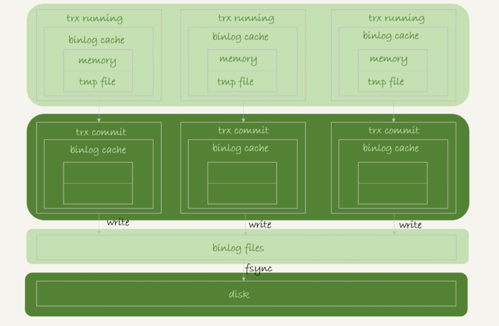
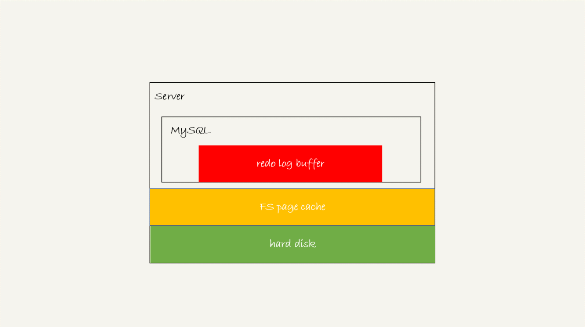
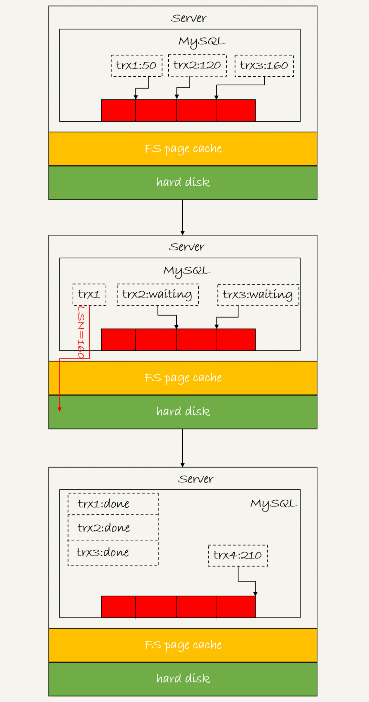
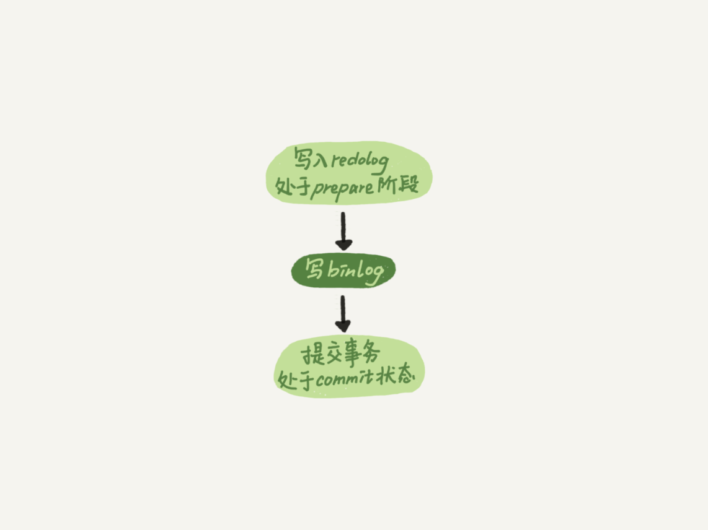
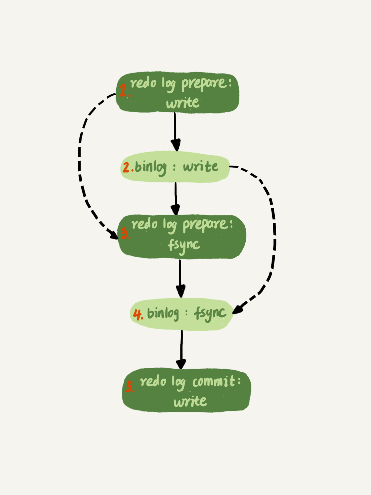

- 00 开篇词 这一次，让我们一起来搞懂MySQL.md.html
- 01 基础架构：一条SQL查询语句是如何执行的？.md.html
- 02 日志系统：一条SQL更新语句是如何执行的？.md.html
- 03 事务隔离：为什么你改了我还看不见？.md.html
- 04 深入浅出索引（上）.md.html
- 05 深入浅出索引（下）.md.html
- 06 全局锁和表锁 ：给表加个字段怎么有这么多阻碍？.md.html
- 07 行锁功过：怎么减少行锁对性能的影响？.md.html
- 08 事务到底是隔离的还是不隔离的？.md.html
- 09 普通索引和唯一索引，应该怎么选择？.md.html
- 10 MySQL为什么有时候会选错索引？.md.html
- 11 怎么给字符串字段加索引？.md.html
- 12 为什么我的MySQL会“抖”一下？.md.html
- 13 为什么表数据删掉一半，表文件大小不变？.md.html
- 14 count()这么慢，我该怎么办？.md.html
- 15 答疑文章（一）：日志和索引相关问题.md.html
- 16 “order by”是怎么工作的？.md.html
- 17 如何正确地显示随机消息？.md.html
- 18 为什么这些SQL语句逻辑相同，性能却差异巨大？.md.html
- 19 为什么我只查一行的语句，也执行这么慢？.md.html
- 20 幻读是什么，幻读有什么问题？.md.html
- 21 为什么我只改一行的语句，锁这么多？.md.html
- 22 MySQL有哪些“饮鸩止渴”提高性能的方法？.md.html
- 23 MySQL是怎么保证数据不丢的？.md.html
- 24 MySQL是怎么保证主备一致的？.md.html
- 25 MySQL是怎么保证高可用的？.md.html
- 26 备库为什么会延迟好几个小时？.md.html
- 27 主库出问题了，从库怎么办？.md.html
- 28 读写分离有哪些坑？.md.html
- 29 如何判断一个数据库是不是出问题了？.md.html
- 30 答疑文章（二）：用动态的观点看加锁.md.html
- 31 误删数据后除了跑路，还能怎么办？.md.html
- 32 为什么还有kill不掉的语句？.md.html
- 33 我查这么多数据，会不会把数据库内存打爆？.md.html
- 34 到底可不可以使用join？.md.html
- 35 join语句怎么优化？.md.html
- 36 为什么临时表可以重名？.md.html
- 37 什么时候会使用内部临时表？.md.html
- 38 都说InnoDB好，那还要不要使用Memory引擎？.md.html
- 39 自增主键为什么不是连续的？.md.html
- 40 insert语句的锁为什么这么多？.md.html
- 41 怎么最快地复制一张表？.md.html
- 42 grant之后要跟着flush privileges吗？.md.html
- 43 要不要使用分区表？.md.html
- 44 答疑文章（三）：说一说这些好问题.md.html
- 45 自增id用完怎么办？.md.html
- 我的MySQL心路历程.md.html
- 结束语 点线网面，一起构建MySQL知识网络.md.html
- 捐赠
23 MySQL是怎么保证数据不丢的？
今天这篇文章，我会继续和你介绍在业务高峰期临时提升性能的方法。从文章标题“MySQL 是怎么保证数据不丢的？”，你就可以看出来，今天我和你介绍的方法，跟数据的可靠性有关。
在专栏前面文章和答疑篇中，我都着重介绍了 WAL 机制，得到的结论是：只要 redo log 和 binlog 保证持久化到磁盘，就能确保 MySQL 异常重启后，数据可以恢复。
评论区有同学又继续追问，redo log 的写入流程是怎么样的，如何保证 redo log 真实地写入了磁盘。那么今天，我们就再一起看看 MySQL 写入 binlog 和 redo log 的流程。
binlog 的写入机制
其实，binlog 的写入逻辑比较简单：事务执行过程中，先把日志写到 binlog cache，事务提交的时候，再把 binlog cache 写到 binlog 文件中。
一个事务的 binlog 是不能被拆开的，因此不论这个事务多大，也要确保一次性写入。这就涉及到了 binlog cache 的保存问题。
系统给 binlog cache 分配了一片内存，每个线程一个，参数 binlog_cache_size 用于控制单个线程内 binlog cache 所占内存的大小。如果超过了这个参数规定的大小，就要暂存到磁盘。
事务提交的时候，执行器把 binlog cache 里的完整事务写入到 binlog 中，并清空 binlog cache。状态如图 1 所示。

图 1 binlog 写盘状态
可以看到，每个线程有自己 binlog cache，但是共用同一份 binlog 文件。
- 图中的 write，指的就是指把日志写入到文件系统的 page cache，并没有把数据持久化到磁盘，所以速度比较快。
- 图中的 fsync，才是将数据持久化到磁盘的操作。一般情况下，我们认为 fsync 才占磁盘的 IOPS。
write 和 fsync 的时机，是由参数 sync_binlog 控制的：
- sync_binlog=0 的时候，表示每次提交事务都只 write，不 fsync；
- sync_binlog=1 的时候，表示每次提交事务都会执行 fsync；
- sync_binlog=N(N>1) 的时候，表示每次提交事务都 write，但累积 N 个事务后才 fsync。
因此，在出现 IO 瓶颈的场景里，将 sync_binlog 设置成一个比较大的值，可以提升性能。在实际的业务场景中，考虑到丢失日志量的可控性，一般不建议将这个参数设成 0，比较常见的是将其设置为 100~1000 中的某个数值。
但是，将 sync_binlog 设置为 N，对应的风险是：如果主机发生异常重启，会丢失最近 N 个事务的 binlog 日志。
redo log 的写入机制
接下来，我们再说说 redo log 的写入机制。
在专栏的[第 15 篇答疑文章]中，我给你介绍了 redo log buffer。事务在执行过程中，生成的 redo log 是要先写到 redo log buffer 的。
然后就有同学问了，redo log buffer 里面的内容，是不是每次生成后都要直接持久化到磁盘呢？
答案是，不需要。
如果事务执行期间 MySQL 发生异常重启，那这部分日志就丢了。由于事务并没有提交，所以这时日志丢了也不会有损失。
那么，另外一个问题是，事务还没提交的时候，redo log buffer 中的部分日志有没有可能被持久化到磁盘呢？
答案是，确实会有。
这个问题，要从 redo log 可能存在的三种状态说起。这三种状态，对应的就是图 2 中的三个颜色块。

图 2 MySQL redo log 存储状态
这三种状态分别是：
- 存在 redo log buffer 中，物理上是在 MySQL 进程内存中，就是图中的红色部分；
- 写到磁盘 (write)，但是没有持久化（fsync)，物理上是在文件系统的 page cache 里面，也就是图中的黄色部分；
- 持久化到磁盘，对应的是 hard disk，也就是图中的绿色部分。
日志写到 redo log buffer 是很快的，wirte 到 page cache 也差不多，但是持久化到磁盘的速度就慢多了。
为了控制 redo log 的写入策略，InnoDB 提供了 innodb_flush_log_at_trx_commit 参数，它有三种可能取值：
- 设置为 0 的时候，表示每次事务提交时都只是把 redo log 留在 redo log buffer 中 ;
- 设置为 1 的时候，表示每次事务提交时都将 redo log 直接持久化到磁盘；
- 设置为 2 的时候，表示每次事务提交时都只是把 redo log 写到 page cache。
InnoDB 有一个后台线程，每隔 1 秒，就会把 redo log buffer 中的日志，调用 write 写到文件系统的 page cache，然后调用 fsync 持久化到磁盘。
注意，事务执行中间过程的 redo log 也是直接写在 redo log buffer 中的，这些 redo log 也会被后台线程一起持久化到磁盘。也就是说，一个没有提交的事务的 redo log，也是可能已经持久化到磁盘的。
实际上，除了后台线程每秒一次的轮询操作外，还有两种场景会让一个没有提交的事务的 redo log 写入到磁盘中。
- 一种是，redo log buffer 占用的空间即将达到 innodb_log_buffer_size 一半的时候，后台线程会主动写盘。注意，由于这个事务并没有提交，所以这个写盘动作只是 write，而没有调用 fsync，也就是只留在了文件系统的 page cache。
- 另一种是，并行的事务提交的时候，顺带将这个事务的 redo log buffer 持久化到磁盘。假设一个事务 A 执行到一半，已经写了一些 redo log 到 buffer 中，这时候有另外一个线程的事务 B 提交，如果 innodb_flush_log_at_trx_commit 设置的是 1，那么按照这个参数的逻辑，事务 B 要把 redo log buffer 里的日志全部持久化到磁盘。这时候，就会带上事务 A 在 redo log buffer 里的日志一起持久化到磁盘。
这里需要说明的是，我们介绍两阶段提交的时候说过，时序上 redo log 先 prepare， 再写 binlog，最后再把 redo log commit。
如果把 innodb_flush_log_at_trx_commit 设置成 1，那么 redo log 在 prepare 阶段就要持久化一次，因为有一个崩溃恢复逻辑是要依赖于 prepare 的 redo log，再加上 binlog 来恢复的。（如果你印象有点儿模糊了，可以再回顾下[第 15 篇文章]中的相关内容）。
每秒一次后台轮询刷盘，再加上崩溃恢复这个逻辑，InnoDB 就认为 redo log 在 commit 的时候就不需要 fsync 了，只会 write 到文件系统的 page cache 中就够了。
通常我们说 MySQL 的“双 1”配置，指的就是 sync_binlog 和 innodb_flush_log_at_trx_commit 都设置成 1。也就是说，一个事务完整提交前，需要等待两次刷盘，一次是 redo log（prepare 阶段），一次是 binlog。
这时候，你可能有一个疑问，这意味着我从 MySQL 看到的 TPS 是每秒两万的话，每秒就会写四万次磁盘。但是，我用工具测试出来，磁盘能力也就两万左右，怎么能实现两万的 TPS？
解释这个问题，就要用到组提交（group commit）机制了。
这里，我需要先和你介绍日志逻辑序列号（log sequence number，LSN）的概念。LSN 是单调递增的，用来对应 redo log 的一个个写入点。每次写入长度为 length 的 redo log， LSN 的值就会加上 length。
LSN 也会写到 InnoDB 的数据页中，来确保数据页不会被多次执行重复的 redo log。关于 LSN 和 redo log、checkpoint 的关系，我会在后面的文章中详细展开。
如图 3 所示，是三个并发事务 (trx1, trx2, trx3) 在 prepare 阶段，都写完 redo log buffer，持久化到磁盘的过程，对应的 LSN 分别是 50、120 和 160。

图 3 redo log 组提交
从图中可以看到，
- trx1 是第一个到达的，会被选为这组的 leader；
- 等 trx1 要开始写盘的时候，这个组里面已经有了三个事务，这时候 LSN 也变成了 160；
- trx1 去写盘的时候，带的就是 LSN=160，因此等 trx1 返回时，所有 LSN 小于等于 160 的 redo log，都已经被持久化到磁盘；
- 这时候 trx2 和 trx3 就可以直接返回了。
所以，一次组提交里面，组员越多，节约磁盘 IOPS 的效果越好。但如果只有单线程压测，那就只能老老实实地一个事务对应一次持久化操作了。
在并发更新场景下，第一个事务写完 redo log buffer 以后，接下来这个 fsync 越晚调用，组员可能越多，节约 IOPS 的效果就越好。
为了让一次 fsync 带的组员更多，MySQL 有一个很有趣的优化：拖时间。在介绍两阶段提交的时候，我曾经给你画了一个图，现在我把它截过来。

图 4 两阶段提交
图中，我把“写 binlog”当成一个动作。但实际上，写 binlog 是分成两步的：
- 先把 binlog 从 binlog cache 中写到磁盘上的 binlog 文件；
- 调用 fsync 持久化。
MySQL 为了让组提交的效果更好，把 redo log 做 fsync 的时间拖到了步骤 1 之后。也就是说，上面的图变成了这样：

图 5 两阶段提交细化
这么一来，binlog 也可以组提交了。在执行图 5 中第 4 步把 binlog fsync 到磁盘时，如果有多个事务的 binlog 已经写完了，也是一起持久化的，这样也可以减少 IOPS 的消耗。
不过通常情况下第 3 步执行得会很快，所以 binlog 的 write 和 fsync 间的间隔时间短，导致能集合到一起持久化的 binlog 比较少，因此 binlog 的组提交的效果通常不如 redo log 的效果那么好。
如果你想提升 binlog 组提交的效果，可以通过设置 binlog_group_commit_sync_delay 和 binlog_group_commit_sync_no_delay_count 来实现。
- binlog_group_commit_sync_delay 参数，表示延迟多少微秒后才调用 fsync;
- binlog_group_commit_sync_no_delay_count 参数，表示累积多少次以后才调用 fsync。
这两个条件是或的关系，也就是说只要有一个满足条件就会调用 fsync。
所以，当 binlog_group_commit_sync_delay 设置为 0 的时候，binlog_group_commit_sync_no_delay_count 也无效了。
之前有同学在评论区问到，WAL 机制是减少磁盘写，可是每次提交事务都要写 redo log 和 binlog，这磁盘读写次数也没变少呀？
现在你就能理解了，WAL 机制主要得益于两个方面：
- redo log 和 binlog 都是顺序写，磁盘的顺序写比随机写速度要快；
- 组提交机制，可以大幅度降低磁盘的 IOPS 消耗。
分析到这里，我们再来回答这个问题：如果你的 MySQL 现在出现了性能瓶颈，而且瓶颈在 IO 上，可以通过哪些方法来提升性能呢？
针对这个问题，可以考虑以下三种方法：
- 设置 binlog_group_commit_sync_delay 和 binlog_group_commit_sync_no_delay_count 参数，减少 binlog 的写盘次数。这个方法是基于“额外的故意等待”来实现的，因此可能会增加语句的响应时间，但没有丢失数据的风险。
- 将 sync_binlog 设置为大于 1 的值（比较常见是 100~1000）。这样做的风险是，主机掉电时会丢 binlog 日志。
- 将 innodb_flush_log_at_trx_commit 设置为 2。这样做的风险是，主机掉电的时候会丢数据。
我不建议你把 innodb_flush_log_at_trx_commit 设置成 0。因为把这个参数设置成 0，表示 redo log 只保存在内存中，这样的话 MySQL 本身异常重启也会丢数据，风险太大。而 redo log 写到文件系统的 page cache 的速度也是很快的，所以将这个参数设置成 2 跟设置成 0 其实性能差不多，但这样做 MySQL 异常重启时就不会丢数据了，相比之下风险会更小。
小结
在专栏的[第 2 篇]和[第 15 篇]文章中，我和你分析了，如果 redo log 和 binlog 是完整的，MySQL 是如何保证 crash-safe 的。今天这篇文章，我着重和你介绍的是 MySQL 是“怎么保证 redo log 和 binlog 是完整的”。
希望这三篇文章串起来的内容，能够让你对 crash-safe 这个概念有更清晰的理解。
之前的第 15 篇答疑文章发布之后，有同学继续留言问到了一些跟日志相关的问题，这里为了方便你回顾、学习，我再集中回答一次这些问题。
问题 1：执行一个 update 语句以后，我再去执行 hexdump 命令直接查看 ibd 文件内容，为什么没有看到数据有改变呢？
回答：这可能是因为 WAL 机制的原因。update 语句执行完成后，InnoDB 只保证写完了 redo log、内存，可能还没来得及将数据写到磁盘。
问题 2：为什么 binlog cache 是每个线程自己维护的，而 redo log buffer 是全局共用的？
回答：MySQL 这么设计的主要原因是，binlog 是不能“被打断的”。一个事务的 binlog 必须连续写，因此要整个事务完成后，再一起写到文件里。
而 redo log 并没有这个要求，中间有生成的日志可以写到 redo log buffer 中。redo log buffer 中的内容还能“搭便车”，其他事务提交的时候可以被一起写到磁盘中。
问题 3：事务执行期间，还没到提交阶段，如果发生 crash 的话，redo log 肯定丢了，这会不会导致主备不一致呢？
回答：不会。因为这时候 binlog 也还在 binlog cache 里，没发给备库。crash 以后 redo log 和 binlog 都没有了，从业务角度看这个事务也没有提交，所以数据是一致的。
问题 4：如果 binlog 写完盘以后发生 crash，这时候还没给客户端答复就重启了。等客户端再重连进来，发现事务已经提交成功了，这是不是 bug？
回答：不是。
你可以设想一下更极端的情况，整个事务都提交成功了，redo log commit 完成了，备库也收到 binlog 并执行了。但是主库和客户端网络断开了，导致事务成功的包返回不回去，这时候客户端也会收到“网络断开”的异常。这种也只能算是事务成功的，不能认为是 bug。
实际上数据库的 crash-safe 保证的是：
- 如果客户端收到事务成功的消息，事务就一定持久化了；
- 如果客户端收到事务失败（比如主键冲突、回滚等）的消息，事务就一定失败了；
- 如果客户端收到“执行异常”的消息，应用需要重连后通过查询当前状态来继续后续的逻辑。此时数据库只需要保证内部（数据和日志之间，主库和备库之间）一致就可以了。
最后，又到了课后问题时间。
今天我留给你的思考题是：你的生产库设置的是“双 1”吗？ 如果平时是的话，你有在什么场景下改成过“非双 1”吗？你的这个操作又是基于什么决定的？
另外，我们都知道这些设置可能有损，如果发生了异常，你的止损方案是什么？
你可以把你的理解或者经验写在留言区，我会在下一篇文章的末尾选取有趣的评论和你一起分享和分析。感谢你的收听，也欢迎你把这篇文章分享给更多的朋友一起阅读。
上期问题时间
我在上篇文章最后，想要你分享的是线上“救火”的经验。
@Long 同学，在留言中提到了几个很好的场景。
- 其中第 3 个问题，“如果一个数据库是被客户端的压力打满导致无法响应的，重启数据库是没用的。”，说明他很好地思考了。 这个问题是因为重启之后，业务请求还会再发。而且由于是重启，buffer pool 被清空，可能会导致语句执行得更慢。
- 他提到的第 4 个问题也很典型。有时候一个表上会出现多个单字段索引（而且往往这是因为运维工程师对索引原理不够清晰做的设计），这样就可能出现优化器选择索引合并算法的现象。但实际上，索引合并算法的效率并不好。而通过将其中的一个索引改成联合索引的方法，是一个很好的应对方案。
© 2019 - 2023 Liangliang Lee. Powered by gin and hexo-theme-book.